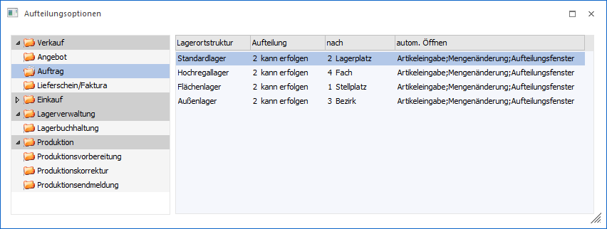
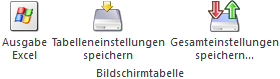

Im Menüpunkt…
1 WinLine FAKT
1 Stammdaten
1 Lagerorte
1 Aufteilungsoptionen
… kann hinterlegt werden, in welchen Bereichen bzw. ab welcher Belegstufe Lagerorte (unterteilt nach Lagerortstruktur) erfasst werden können bzw. müssen.

Im linken Verzeichnisbaum werden die Programmbereiche der WinLine angezeigt, für welche die Einstellungen vorgenommen werden können:
ü Verkauf
ü Angebot
ü Auftrag
ü Lieferschein/Faktura
ü Einkauf
ü Anfrage
ü Bestellung
ü Lieferantenlieferschein/ -faktura
ü Lagerverwaltung
ü Lagerbuchhaltung
ü Produktion
ü Produktionsvorbereitung
ü Produktionskorrektur
ü Produktionsendmeldung
Für jeden dieser Programmbereich kann in der rechten Tabelle definiert werden, wie bzw. ob die Erfassung von Lagerorten erfolgen soll.
Ø Lagerortstruktur
An dieser Stelle wird Lagerortstrukturen aufgelistet und die Bezeichnung angezeigt.
Ø Aufteilung
In dieser Spalte kann pro Lagerortstruktur bestimmt werden, ob die Aufteilung:
ü 1 - muss erfolgen
Bei der
Einstellung "1 - muss erfolgen" muss die Menge der Artikelzeile auf Lagerorte
aufgeteilt worden sein. Wurden keine bzw. keine ausreichenden Lagerorte erfasst,
so kann der Vorgang nicht abgeschlossen werden.
Hinweis
Wird in der WinLine FAKT mit einer Belegart gearbeitet, in welcher das Erstellen der Lagerbuchung deaktiviert wurde, so wird automatisch mit der Aufteilungsoption "2 - kann erfolgen" gearbeitet.
ü 2 - kann erfolgen
Bei der
Einstellung "2 - kann erfolgen" kann die Menge der Artikelzeile auf Lagerorte
aufgeteilt werden.
Hinweis
Wurde im Bereich "Produktion - Produktionsendmeldung" die Einstellung "2 - kann erfolgen" gewählt, so sind folgende Punkte zu beachten:
ü Handelt es sich bei dem Produktionsartikel um einen unausgeprägten Ausprägungsartikel, so ist eine Erfassung der Lagerorte nicht möglich.
ü In dem Programm "Schnellendmeldung" ist keine Erfassung der Lagerorte möglich.
Achtung
Bei dem Druck eines EK- bzw. VK-Lieferscheins bzw. einer entsprechenden Faktura ohne vorherigen Lieferschein wird immer die Belegmenge für die Lagerortbuchung verwendet. D.h. existiert eine Differenz zwischen Beleg- und Lagerortmenge (Lagerortkugel ist "orange"), so wird die Differenz für die Buchung prozentual auf die hinterlegten Lagerorte aufgeteilt.
ü 3 - darf nicht erfolgen
Die
Einstellung "3 - darf nicht erfolgen" lässt keine Erfassung auf Lagerorte
zu.
Ø nach
An dieser Stelle wird dargestellt in welcher Hierarchie-Ebene die Lagerorte erfasst werden müssen. Dieses ist standardmäßig die unterste Ebene der jeweiligen Struktur.
Hinweis
In dem Bereich "Lagerverwaltung" kann die Ebene manuell definiert werden.
Ø autom. Öffnen
In dieser Spalte kann mit Hilfe einer Mehrfachauswahl definiert werden, ob und wann das Fenster "Lagerorte erfassen" automatisch von der WinLine geöffnet werden soll. Ein manuelles Öffnen des Fensters ist natürlich ohne weiteres möglich.
ü Artikeleingabe
Das Fenster
"Lagerorte erfassen" wird bei der Erfassung einer neuen Artikelzeile automatisch
geöffnet.
ü Mengenänderung
Das Fenster
"Lagerorte erfassen" wird bei jeder Mengenänderung automatisch geöffnet.
Grundvoraussetzung hierfür ist die Aufteilungsart "2 - muss erfolgen".
ü Aufteilungsfenster
Das Fenster
"Lagerorte erfassen" wird automatisch geöffnet, sobald das Fenster "Ausprägungen
erfassen" geschlossen wird.
Hinweis
In dem Bereich "Produktion" steht keine individuelle Parametrisierung des Öffnens zur Verfügung. Hier wird immer nach dem folgendem Schema vorgegangen:
ü 1 - muss erfolgen
Bei der
Einstellung "1 - muss erfolgen" geht das Erfassungsfenster für die Lagerorte bei
jeder Mengenänderung auf. Wurden keine bzw. keine ausreichenden Lagerorte
erfasst, so kann der Vorgang nicht abgeschlossen werden.
ü 2 - kann erfolgen
Bei der
Einstellung "2 - kann erfolgen" geht das Fenster "Lagerorte erfassen" bei der
ersten Mengenerfassung 1x auf und muss in weiterer Folge manuell geöffnet
werden.
Hinweis
Wurde im Bereich "Produktion - Produktionsendmeldung" die Einstellung "2 - kann erfolgen" gewählt, so sind folgende Punkte zu beachten:
ü Die Erfassung der Lagerorte erfolgt in den Programmen "Produktionsendmeldung" und "Expressendmeldung" manuell, d.h. es wird das Fenster "Lagerorte erfassen" nicht automatisch geöffnet.
ü Handelt es sich bei dem Produktionsartikel um einen unausgeprägten Ausprägungsartikel, so ist eine Erfassung der Lagerorte nicht möglich.
ü In dem Programm "Schnellendmeldung" ist keine Erfassung der Lagerorte möglich.
Tabellenbuttons

Ø Ausgabe Excel
Durch Anwahl des Buttons "Ausgabe Excel" wird der Inhalt der Tabelle nach Microsoft Excel übergeben.
Ø Tabelleneinstellungen speichern
Die Spalten einer Tabelle können grundsätzlich an beliebige Positionen verschoben, bzw. in der Breite entsprechend angepasst werden. Durch Anwahl des Buttons "Tabelleneinstellungen speichern" werden die Einstellungen benutzerspezifisch gespeichert und bei dem nächsten Aufruf des Programmpunktes wieder vorgeschlagen.
Ø Gesamteinstellungen speichern…
Im Gegensatz zu "Tabelleneinstellungen speichern" können mit "Gesamteinstellungen speichern" mehrere Tabellenaufbauten gespeichert und nach Wunsch geladen werden. Zusätzlich werden Sonderfunktionen der Tabelle (z.B. "Spalte gruppieren") ebenfalls bei der Speicherung bedacht.
Buttons
Ø Ok
Durch Anwahl des Buttons "Ok" bzw. der Taste F5 werden die Einstellungen gespeichert.
Ø Ende
Durch Anklicken des Buttons "Ende" bzw. der Taste ESC wird das Fenster geschlossen und alle nicht gespeicherten Eingaben verworfen.
Ø Liste ausgeben
Mit Hilfe des Buttons "Liste ausgeben" wird eine Liste der Aufteilungsoptionen pro Lagerortstruktur am Bildschirm ausgegeben.